腾讯云服务器初始化操作
在 2019-03-26 Tuesday 发布于 DevOps 分类 • 3 min read
重装系统¶
说明:
因为我买的时候, CentOS最新只提供到7.3, 我希望使用CentOS 7.5. 看到镜像库里有(什么毛病, 买的时候为啥不提供
), 所以重新安装下系统.
-
选中实例, 点击更多, 选择重装系统:
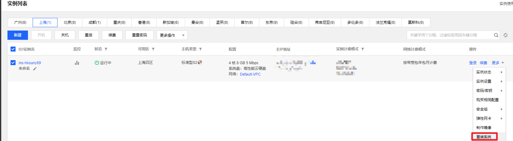
-
选择公共镜像 -> CentOS -> CentOS 7.5 64位 -> 输入root密码. 点击开始重装. 如下图:
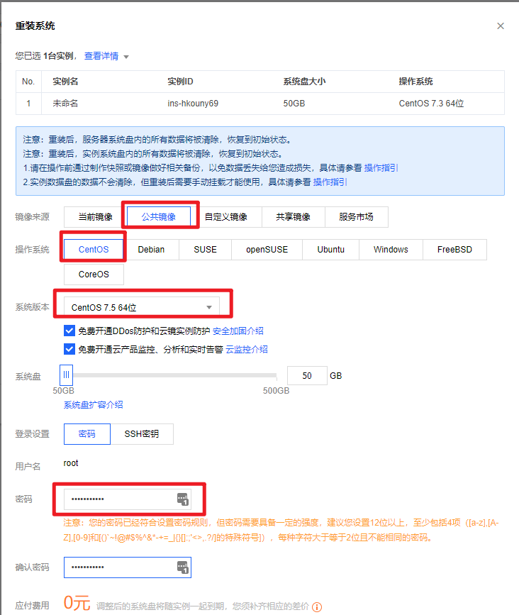
-
等待重装完毕即可.
设置监控告警¶
-
点击监控图标:
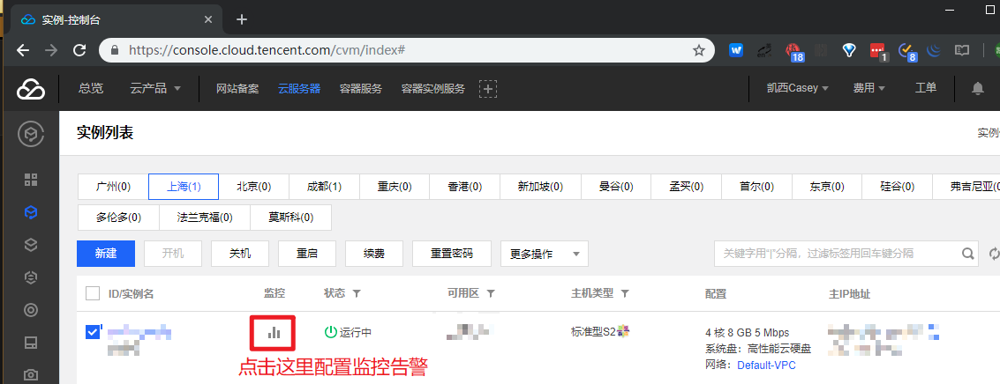
-
有以下监控指标, 如下图, 点击设置告警:
- CPU
- 内存
- 宽带(内外网)
- 磁盘IO
- 分区使用请看
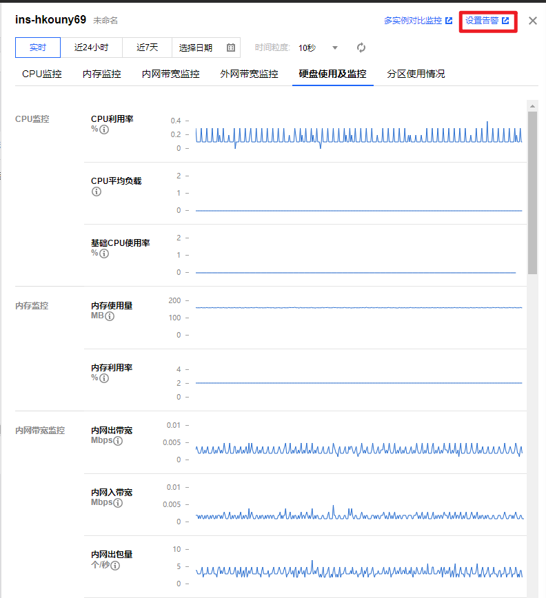
-
根据自己的需要, 定制告警策略. 示例如下:
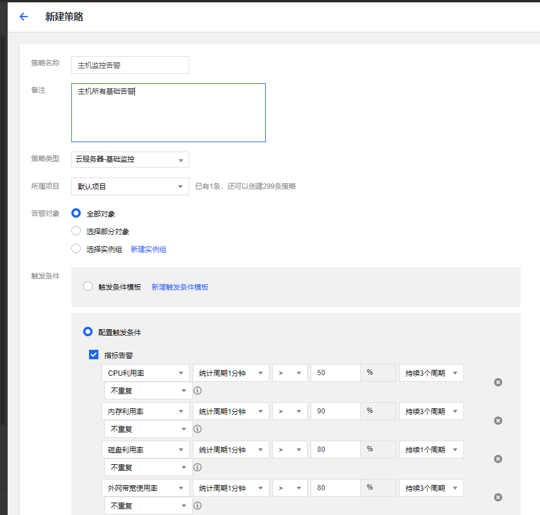
-
要配置告警通知渠道, 需要先新增用户组. 如下(我和其他人合用, 所以建立一个用户组还是有必要的):
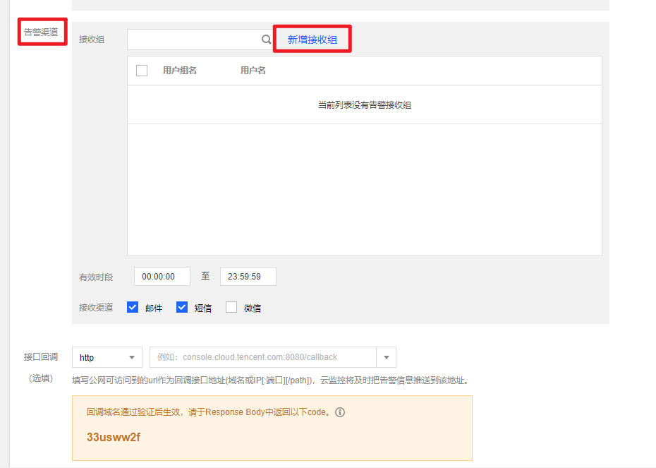
-
新增用户组的操作如下, 先直接使用预设策略 - 管理员就可以了.
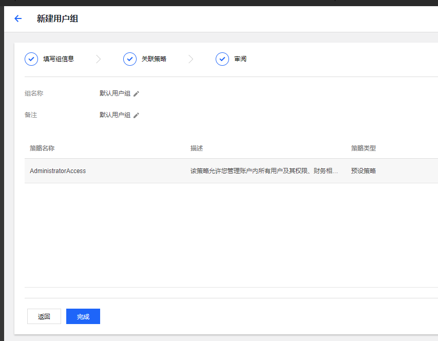
-
接下来关联到具体的用户组
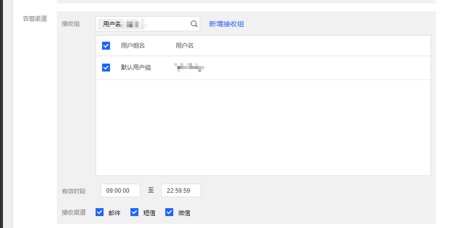
-
点击完成, 配置完成后如下所示: (可以把默认的禁用掉了)
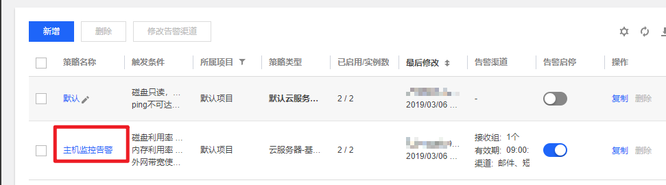
创建密钥并绑定主机¶
-
在SSH密钥 菜单, 点击创建密钥:
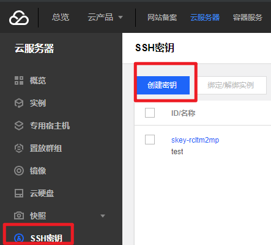
-
创建密钥(
 密钥请妥善保存, 勿外传).
密钥请妥善保存, 勿外传).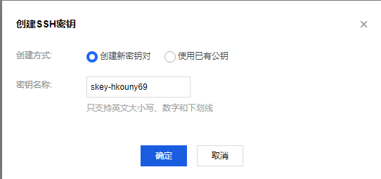
-
创建后, 先关闭主机(关闭后的主机才能绑定密钥, 很好, 关机也受到告警了👌), 再选择绑定/解绑实例, 如下图:
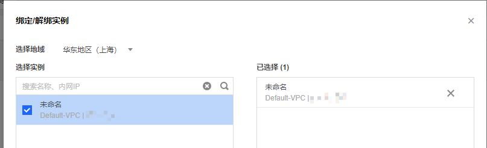
安全组配置¶
类似于防火墙权限.
-
点击安全组 -> 新建. 如下图:
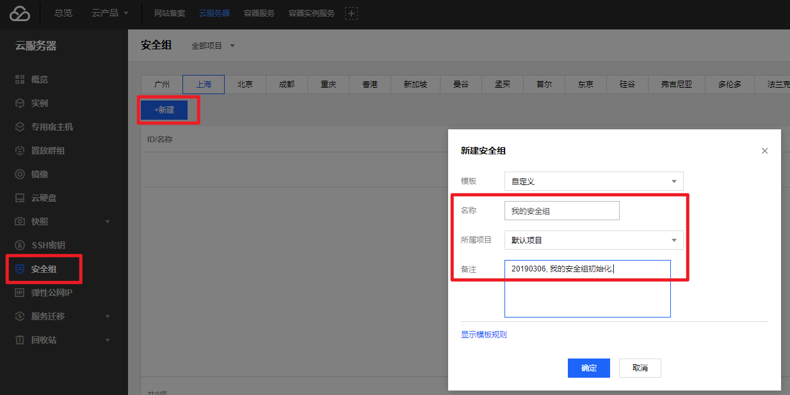
-
选择立即设置规则. 具体原因如下图:
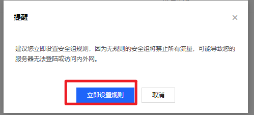
-
可以先关联到我自己的云主机实例. 如下图:
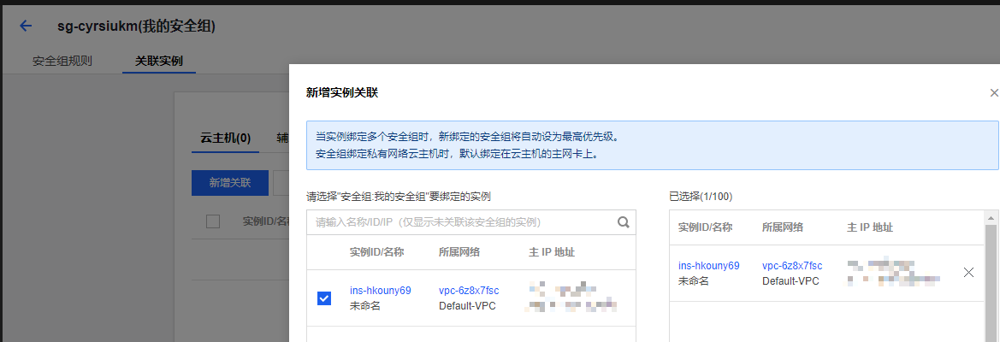
-
然后再配置出/入站规则, 先配置入站, 先选择一键放通. 放通以下:
- Linux SSH登录: 22端口
- Windows登录: 3389
- ping: ICMP协议
- HTTP: 80
- HTTPS: 443
- FTP: 20和21
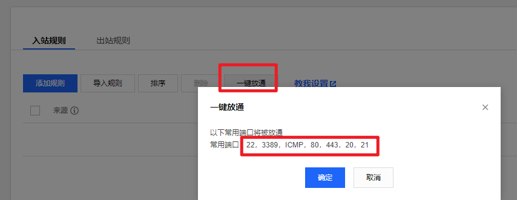
-
再根据自己需要添加规则, 如下: (放通TCP的8000端口)
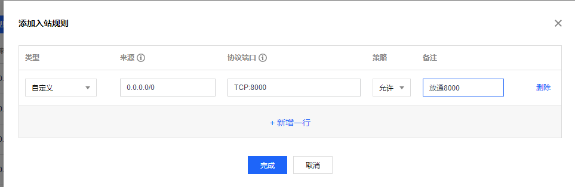
-
最后配置出站规则, 选择一键放通. 以后再慢慢细化, 如下:
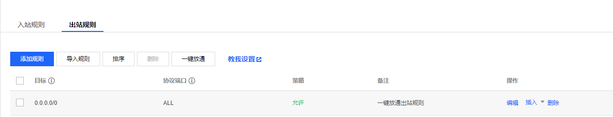
至此, 控制台上该配置的就配置的差不多了, 接下来登录主机进行配置.
CentOS 7.5 优化配置¶
用户/登录相关优化¶
创建普通用户 基于公钥登录
-
创建普通用户:
useradd -m -p yourpassword casey -
普通用户基于公钥登录: (因为之前创建密钥并绑定主机, 公钥已经存在于主机上了, 所以不需要keygen了, 直接复制就可以了)
cp /root/.ssh/authorized_keys /home/casey/.ssh && chown -R casey:casey /home/casey/.ssh/ -
确认基于ssh公钥的登录是否工作
完整的基于公钥登录的步骤如下: (前提是刚开始该账户能通过账号密码方式登录)
- 在云主机上创建普通用户:
useradd -m -p yourpassword hellowordomain- 使用 ssh-keygen命令在云主机上创建密匙对:
ssh-keygen -t rsa -b 4096 -f ~/.ssh/id_rsa_tencent_$(date +%Y-%m-%d) -C "tencent key for hellowordomain"- 使用 ssh-copy-id 命令安装公匙：
ssh-copy-id -i /path/to/public-key-file user@host- 确认基于ssh公钥的登录是否工作
普通用户配置sudo权限
在 CentOS/RHEL 系统中如何将用户 vivek 添加到 sudo 组中
在 CentOS/RHEL 和 Fedora 系统中允许 wheel 组中的用户执行所有的命令。使用 usermod 命令将用户 vivek 添加到 wheel 组中：
$ sudo usermod -aG wheel vivek
$ id vivek
sudo无需输入密码
# root用户
visudo
# 修改如下内容后保存退出
## Allows people in group wheel to run all commands
# %wheel ALL=(ALL) ALL
## Same thing without a password
%wheel ALL=(ALL) NOPASSWD: ALL
测试并确保用户 vivek 可以以 root 身份登录执行以下命令：
sudo -i # 切换到root用户
sudo systemctl status sshd # 查看sshd的状态
sshd_config 优化
# 禁用root登录
PermitRootLogin no
ChallengeResponseAuthentication no
PasswordAuthentication no
UsePAM no
# 禁用密码登录 仅留下公匙登录
AuthenticationMethods publickey
PubkeyAuthentication yes
# 禁用空密码
PermitEmptyPasswords no
最后测试 sshd_config 文件并重启/重新加载 SSH 服务
sudo sshd -t
sudo systemctl restart sshd.service
更新系统和软件¶
sudo yum upgrade -y # 升级所有软件
sudo yum clean all -y # 清理缓存
安装及配置 Git¶
-
安装Git
sudo yum install -y --setopt=tsflags=nodocs git -
配置git
git config --global user.name "east4ming"
git config --global user.email "cuikaidong@foxmail.com"
ssh-keygen -t rsa -b 4096 -C "cuikaidong@foxmail.com" # 已有私钥也可以重复使用 -
cat .ssh/id_rsa.pub并复制 (id_rsa.pub是对应的公钥信息) - 打开github网页登入账户进入账户settings左边找到SSH，可以清理一下没用的SSH keys，然后新建一个 ，取名任意，粘贴进去cat产生的所有字符。保存即可。
-
缓存HTTPS方式的密码:
$ git config --global credential.helper 'cache --timeout=3600' # Set the cache to timeout after 1 hour (setting is in seconds)
优化配置shell¶
安装zsh
sudo yum install -y --setopt=tsflags=nodocs zsh
zsh --version
sudo chsh -s $(which zsh)
# 注销
安装powerline
pip install powerline-status --user
安装oh-my-zsh
sh -c "$(wget https://raw.githubusercontent.com/robbyrussell/oh-my-zsh/master/tools/install.sh -O -)"
Using Oh My Zsh¶
以下内容来自 oh-my-zsh github
Plugins¶
Oh My Zsh comes with a shitload of plugins to take advantage of. You can take a look in the plugins directory and/or the wikito see what's currently available.
Enabling Plugins
Once you spot a plugin (or several) that you'd like to use with Oh My Zsh, you'll need to enable them in the .zshrc file. You'll find the zshrc file in your $HOME directory. Open it with your favorite text editor and you'll see a spot to list all the plugins you want to load.
vi ~/.zshrc
For example, this might begin to look like this:
plugins=(
git
bundler
dotenv
osx
rake
rbenv
ruby
)
Using Plugins
Most plugins (should! we're working on this) include a README, which documents how to use them.
Themes¶
We'll admit it. Early in the Oh My Zsh world, we may have gotten a bit too theme happy. We have over one hundred themes now bundled. Most of them have screenshots on the wiki. Check them out!
Selecting a Theme
Robby's theme is the default one. It's not the fanciest one. It's not the simplest one. It's just the right one (for him).
Once you find a theme that you'd like to use, you will need to edit the ~/.zshrc file. You'll see an environment variable (all caps) in there that looks like:
ZSH_THEME="robbyrussell"
To use a different theme, simply change the value to match the name of your desired theme. For example:
ZSH_THEME="agnoster" # (this is one of the fancy ones)
# see https://github.com/robbyrussell/oh-my-zsh/wiki/Themes#agnoster
Note: many themes require installing the Powerline Fonts in order to render properly.
Open up a new terminal window and your prompt should look something like this:

In case you did not find a suitable theme for your needs, please have a look at the wiki for more of them.
If you're feeling feisty, you can let the computer select one randomly for you each time you open a new terminal window.
ZSH_THEME="random" # (...please let it be pie... please be some pie..)
And if you want to pick random theme from a list of your favorite themes:
ZSH_THEME_RANDOM_CANDIDATES=(
"robbyrussell"
"agnoster"
)